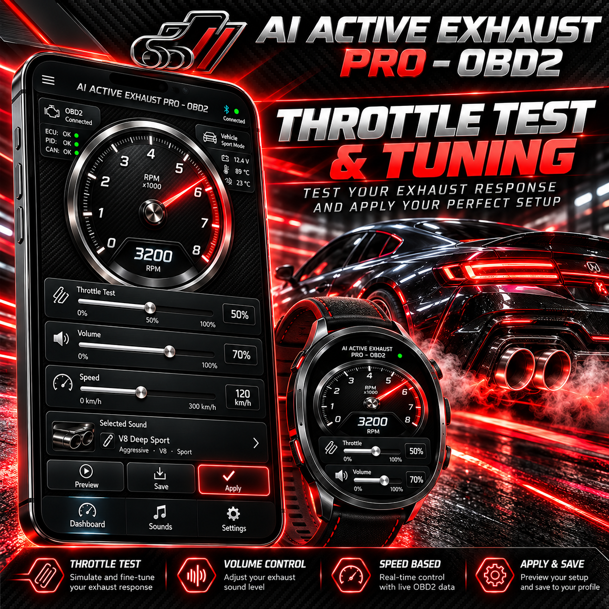
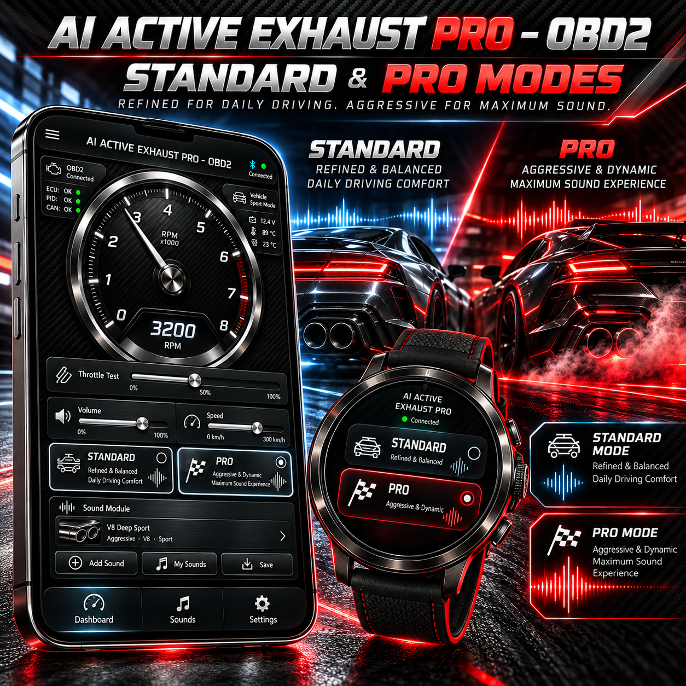
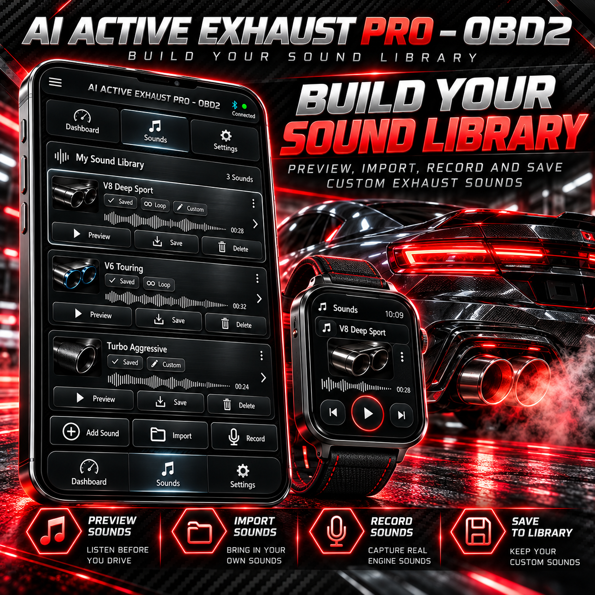
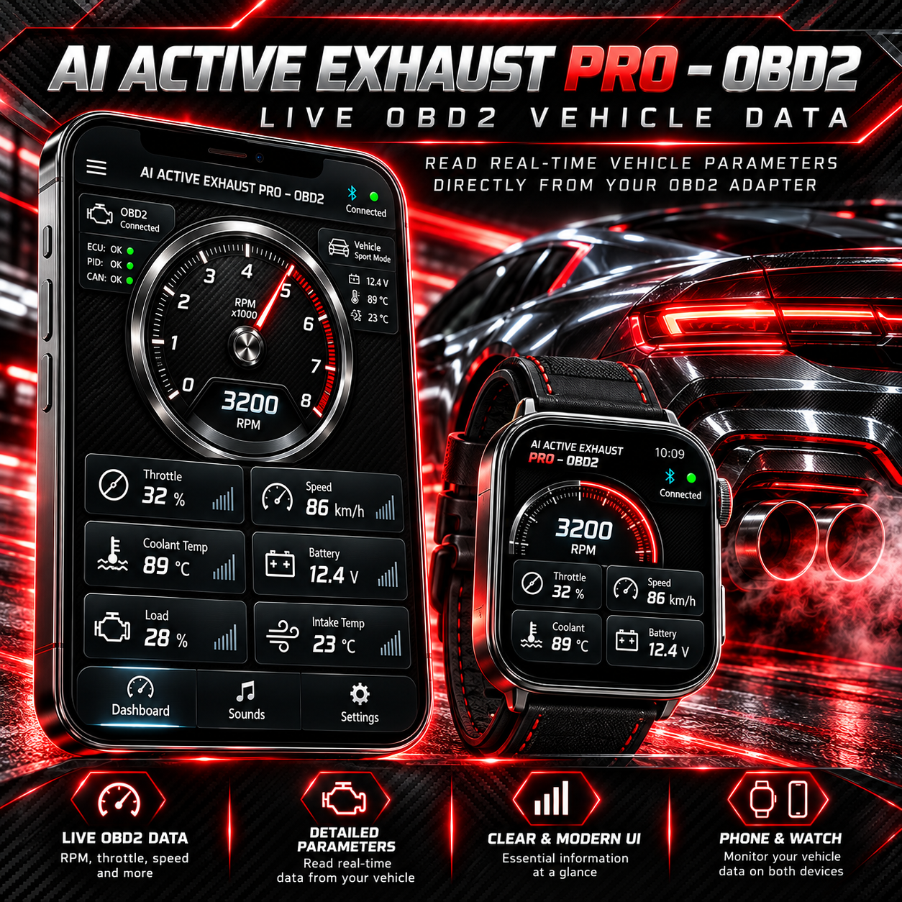
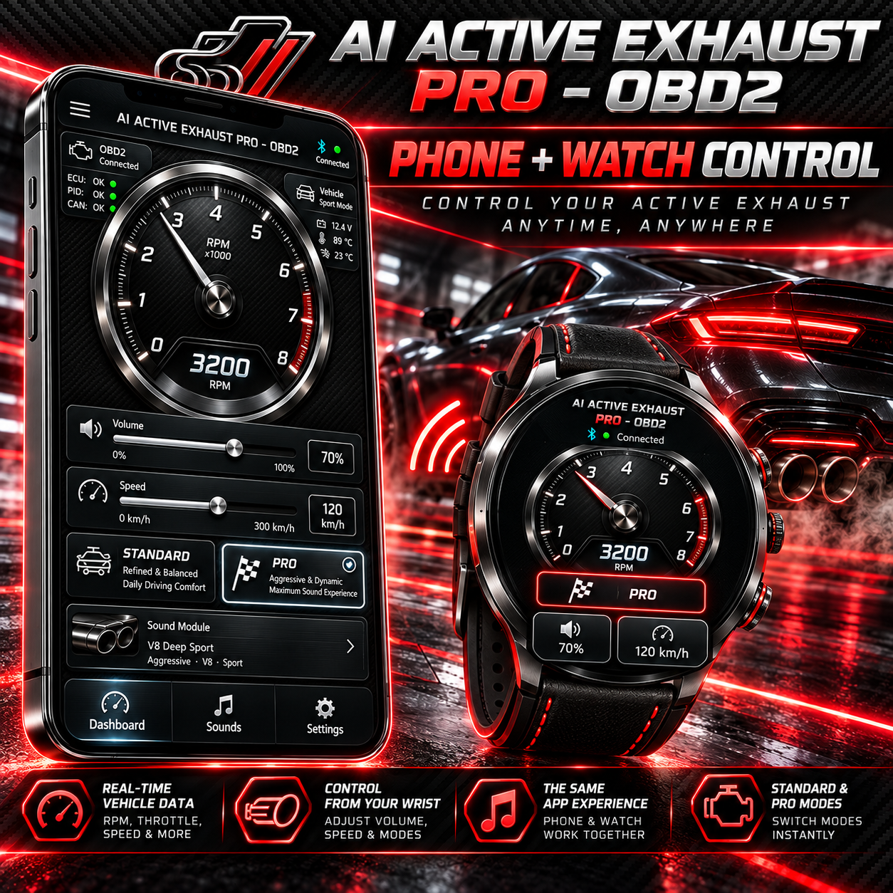
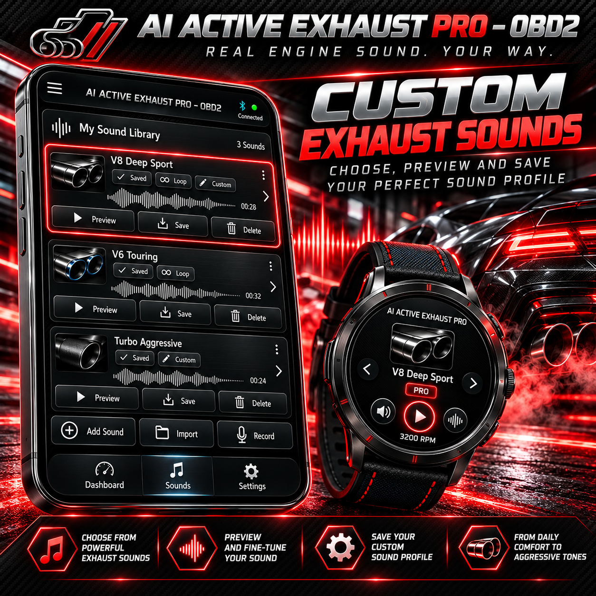
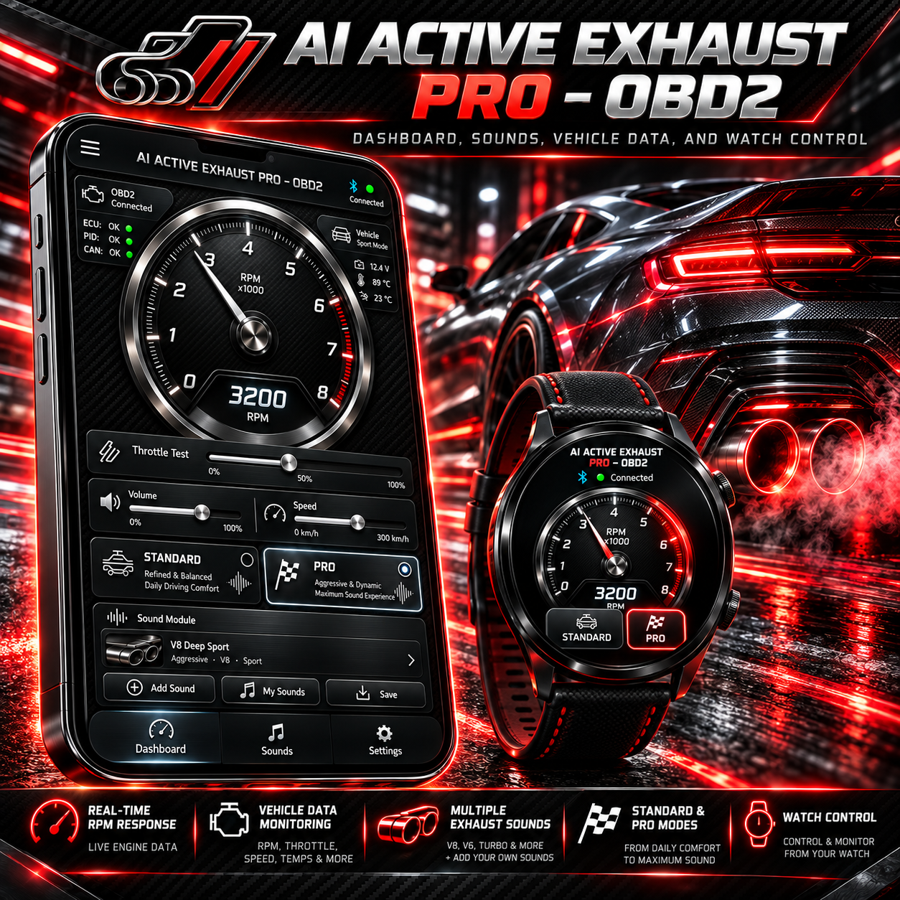

AI ACTIVE EXHAUST PRO – OBD2
OBD2 diagnostics, live data and active exhaust sound controls for compatible vehicles.
Próximamente
Screenshots / Galeria







OBD2 diagnostics, live data and active exhaust sound controls for compatible vehicles.
Próximamente






